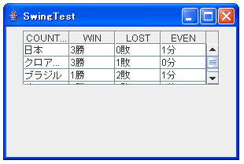
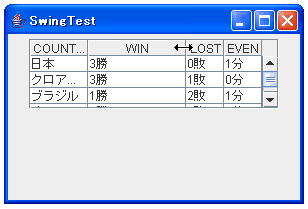
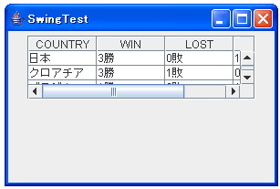
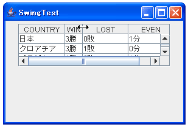
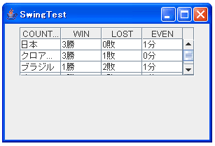
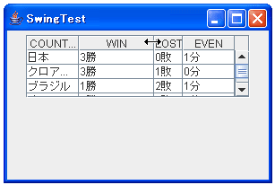
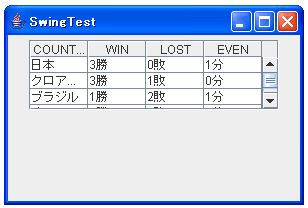
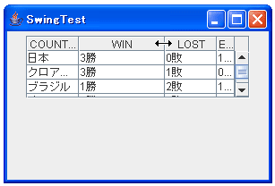
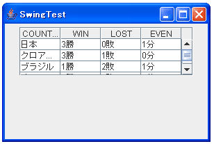
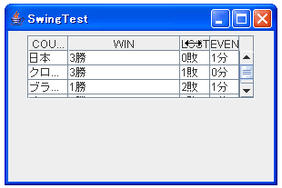

各列の幅の調整方法の指定
ここでは、初期表示時及びある列の幅が変更された時に、他の列の幅にどのように影響が出るかを見ていきます。まずはデフォルトの動作から見ていきます。前のページで使った下記のサンプルを使います。
import javax.swing.*;
import java.awt.event.*;
import java.awt.BorderLayout;
import java.awt.Dimension;
public class SwingTest extends JFrame{
private String[][] tabledata = {
{"日本", "3勝", "0敗", "1分"},
{"クロアチア", "3勝", "1敗", "0分"},
{"ブラジル", "1勝", "2敗", "1分"},
{"オーストラリア", "2勝", "2敗", "0分"}};
private String[] columnNames = {"COUNTRY", "WIN", "LOST", "EVEN"};
public static void main(String[] args){
SwingTest test = new SwingTest("SwingTest");
test.setDefaultCloseOperation(JFrame.EXIT_ON_CLOSE);
test.setVisible(true);
}
SwingTest(String title){
setTitle(title);
setBounds( 10, 10, 300, 200);
JTable table = new JTable(tabledata, columnNames);
JScrollPane sp = new JScrollPane(table);
sp.setPreferredSize(new Dimension(250, 70));
JPanel p = new JPanel();
p.add(sp);
getContentPane().add(p, BorderLayout.CENTER);
}
}
上記を実行すると下記のようになります。

見ていただくと分かる通り特に何も指定しない場合には各列の幅は均等になっています。(列幅の指定方法は後のページで詳しく見ていきます)。
ここで2列目の大きさをマウスを使って大きくしていみます。

2列目の大きさを変化させると、1列目の幅は変化がありませんが、3列目と4列目の幅を調整して全体がはみ出さないように自動的に調整されます。これがデフォルトの動作のようです。
この列幅の調整方法を変更させるには、JTableで用意されている"setAutoResizeMode"メソッドを使います。
setAutoResizeMode public void setAutoResizeMode(int mode)
テーブルのサイズ変更時にテーブルの自動サイズ変更モードを設定します。
パラメータ:
mode - 次の 5 つの有効値のどれか。
AUTO_RESIZE_OFF
AUTO_RESIZE_NEXT_COLUMN
AUTO_RESIZE_SUBSEQUENT_COLUMNS
AUTO_RESIZE_LAST_COLUMN
AUTO_RESIZE_ALL_COLUMNS
それぞれの値の意味は下記のようです。
AUTO_RESIZE_OFF 列の幅を自動調整しない。列の合計が Viewport の幅を超える場合は、水平ス クロールバーを使用してそれらの列に対応する。JTable が JScrollPane に囲 まれていない場合、テーブルの一部を不可視のままにすることがある
AUTO_RESIZE_NEXT_COLUMN サイズが変更された列の直後の列を使う。この場合、隣接するセルの間の「境 界」つまりディバイダを単独で調整できる
AUTO_RESIZE_SUBSEQUENT_COLUMNS 調整中の列の後ろのすべての列を使用して、変更を吸収する。これはデフォル トの動作
AUTO_RESIZE_LAST_COLUMN 最後の列のサイズだけを自動調整する。最終列の境界のために望ましいサイズ の割り当てができない場合は、最終列の幅を適切な限度に設定してそれ以上の 調整は行わない
AUTO_RESIZE_ALL_COLUMNS 調整中の列を含めた JTable 内のすべての列にデルタを分散させる
デフォルトの値は"AUTO_RESIZE_SUBSEQUENT_COLUMNS"のようです。列幅が変更されようとしている該当の列よりも後にある全ての列で調整するとなっていますので、先ほど実際に試した動作と合致しています。
では他の値を設定した場合も試してみましょう。1つ1つサンプルコードを記載するのは大変なので、最初に記載したサンプルコードを下記のように変更して試しています。
JTable table = new JTable(tabledata, columnNames); table.setAutoResizeMode(JTable.AUTO_RESIZE_OFF);
JTable作成直後に"setAutoResizeMode"メソッドを実行して、列幅の調整方法を変更しています。
1.JTable.AUTO_RESIZE_OFFを指定した場合
実行直後は下記のようになります。

この場合、横にもスクロールバーが表示されています。各列の幅は同じ大きさになっています。画面内に収める必要が無いため列の幅は"推奨幅"になっていると思われますが、ここも他のページで詳しく見ていきます。
上記の状態から2列目の幅を変化(小さくしてみました)させると下記のようになります。

この場合は変化させて2列目が変化するだけで、他の列には影響が出ないようです。
2.AUTO_RESIZE_NEXT_COLUMNを指定した場合
実行直後は下記のようになります。

実行直後はデフォルトの場合と同じで、全体がスクロールバーを使わなくても表示されるように調整されています。各列の幅も同じ大きさです。ここから3列目の幅を大きくさせると下記のようになります。

この場合は、変更させている列の直後の列幅で調整が行われるようです。
3.AUTO_RESIZE_LAST_COLUMNを指定した場合
実行直後は下記のようになります。

実行直後はデフォルトの場合と同じです。ここから3列目の幅を大きくさせると下記のようになります。

この場合は、最後の列の列幅で調整が行われるようです。
4.AUTO_RESIZE_ALL_COLUMNSを指定した場合
実行直後は下記のようになります。

実行直後はデフォルトの場合と同じです。ここから3列目の幅を大きくさせると下記のようになります。

この場合は、全ての列の列幅で調整が行われるようです。変更させている列そのものも、マウスで動かした大きさよりも少しずれて大きさが変更されているので、変更している列自体でも調整が行われているのがわかります。
( Written by Tatsuo Ikura )

著者 / TATSUO IKURA
初心者～中級者の方を対象としたプログラミング方法や開発環境の構築の解説を行うサイトの運営を行っています。